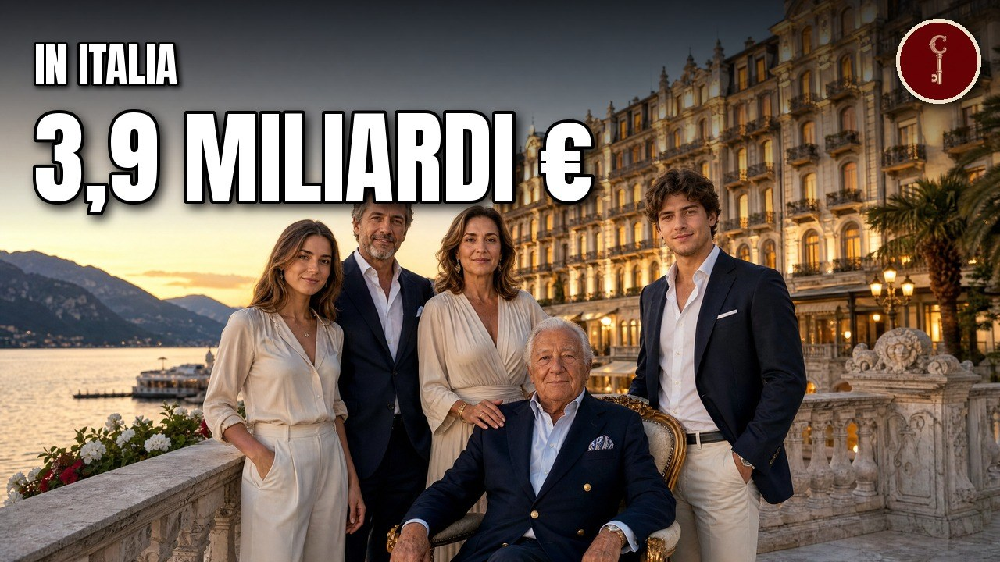

Hotel
I 35 imperi milionari degli hotel in Italia e chi li controlla

Guarda il video su YouTubeIl weekend alle terme, l'albergo di una gita in città, il villaggio al mare, il grand hotel sul lago di Como: in Italia, dietro tante insegne di hotel, c'è qualcuno che magari non ti aspetti. In questo video mettiamo in fila i 35 imperi degli hotel che fanno più soldi in Italia, dal trentacinquesimo al primo, misurati sul fatturato fatto in Italia (ultimo bilancio disponibile, sempre con l'anno), e di ognuno diciamo chi lo controlla oggi.
Le fonti
Le fonti su cui si basa il video.
admin.corporate.eu.tech.qcterme.com
Apri l'articoloalpitour.it
Apri l'articoloansa.it
Apri l'articoloatoka.io
Apri l'articoloatoka.io
Apri l'articoloatoka.io
Apri l'articoloatoka.io
Apri l'articoloatoka.io
Apri l'articoloatoka.io
Apri l'articoloatoka.io
Apri l'articoloatoka.io
Apri l'articoloaziende.it
Apri l'articoloazora.com
Apri l'articolobaglionihotels.com
Apri l'articolobebeez.it
Apri l'articolobebeez.it
Apri l'articolobebeez.it
Apri l'articolobulgari.com
Apri l'articolodev.visitsirmione.com
Apri l'articoloemarketstorage.it
Apri l'articolofinestresullarte.info
Apri l'articolofinews.ch
Apri l'articoloforbes.it
Apri l'articoloforbes.it
Apri l'articoloforbes.it
Apri l'articoloforbes.it
Apri l'articoloforbes.it
Apri l'articolofortune.com
Apri l'articolofortuneita.com
Apri l'articolofortuneita.com
Apri l'articologlobes.co.il
Apri l'articolohnh.it
Apri l'articolohorwathhtl.com
Apri l'articolohospitality-on.com
Apri l'articolohospitality-on.com
Apri l'articolohospitalitynet.org
Apri l'articolohospitalitynet.org
Apri l'articolohospitalitynet.org
r2_A165hosteltur.com
Apri l'articolohosteltur.com
Apri l'articolohotel-bb.com
Apri l'articolohotellerie.pambianconews.com
Apri l'articolohotelsforkings.com
Apri l'articoloilfoglio.it
Apri l'articoloilnordest.it
Apri l'articoloilpost.it
Apri l'articoloilpost.it
Apri l'articoloilsole24ore.com
Apri l'articoloilsole24ore.com
Apri l'articoloilsole24ore.com
Apri l'articoloilsole24ore.com
Apri l'articoloilsole24ore.com
Apri l'articoloilsole24ore.com
Apri l'articoloilsole24ore.com
Apri l'articoloilsole24ore.com
Apri l'articoloilsole24ore.com
Apri l'articoloilsole24ore.com
Apri l'articoloilsole24ore.com
Apri l'articoloitaliabsolutely.com
Apri l'articoloitaliabsolutely.com
Apri l'articoloitaliabsolutely.com
Apri l'articoloitaliaoggi.it
Apri l'articolojournaldespalaces.com
Apri l'articolojournaldespalaces.com
Apri l'articolokatarahospitality.com
Apri l'articololeonardo-hotels.com
Apri l'articololungarnocollection.com
Apri l'articololuoghi.italianbotanicalheritage.com
Apri l'articolomangias.com
Apri l'articolomediakit.bulgari.com
Apri l'articolomeliahotelsinternational.com
Apri l'articolomilanofinanza.it
Apri l'articolomilanofinanza.it
Apri l'articolomilanofinanza.it
Apri l'articolomilanofinanza.it
Apri l'articolomissionline.it
Apri l'articolomissionline.it
Apri l'articolomoney.it
Apri l'articolopravda.com.ua
Apri l'articolopress.fourseasons.com
Apri l'articoloqcterme.com
Apri l'articoloqualitytravel.it
Apri l'articoloqualitytravel.it
Apri l'articoloqualitytravel.it
Apri l'articoloqualitytravel.it
Apri l'articoloqualitytravel.it
Apri l'articoloreferenceforbusiness.com
Apri l'articoloregistroaziende.it
Apri l'articoloroccofortehotels.com
Apri l'articoloroccofortehotels.com
Apri l'articolosinahotels.com
Apri l'articoloskift.com
Apri l'articolosostenibilita.borgoegnazia.com
Apri l'articolotageskarte.io
Apri l'articolotimeout.com
Apri l'articolotopaziende.quotidiano.net
Apri l'articolotopaziende.quotidiano.net
Apri l'articolotopaziende.quotidiano.net
Apri l'articolotopaziende.quotidiano.net
Apri l'articolotopaziende.quotidiano.net
Apri l'articolotopaziende.quotidiano.net
Apri l'articolotopaziende.quotidiano.net
Apri l'articolotopaziende.quotidiano.net
Apri l'articolotopaziende.quotidiano.net
Apri l'articolotopaziende.quotidiano.net
Apri l'articolotopaziende.quotidiano.net
Apri l'articolotopaziende.quotidiano.net
Apri l'articolotopaziende.quotidiano.net
Apri l'articolotopaziende.quotidiano.net
Apri l'articolotopaziende.quotidiano.net
Apri l'articolotopaziende.quotidiano.net
Apri l'articolotopaziende.quotidiano.net
Apri l'articolotophotel.news
Apri l'articolotourmag.com
Apri l'articolovoyages-d-affaires.com
Apri l'articolowe-wealth.com
Apri l'articolowebsim.it
Apri l'articoloWikipedia
Apri l'articoloWikipedia
Apri l'articoloWikipedia
Apri l'articoloWikipedia
Apri l'articoloWikipedia
Apri l'articoloWikipedia
Apri l'articoloWikipedia
Apri l'articoloWikipedia
Apri l'articoloWikipedia
Apri l'articoloWikipedia
Apri l'articoloWikipedia
Apri l'articoloWikipedia
Apri l'articoloWikipedia
Apri l'articoloWikipedia
Apri l'articoloWikipedia
Apri l'articoloWikipedia
Apri l'articoloWikipedia
r2_A214Materiali
Attribuzioni di immagini e video
Thermal_Dawn.jpg
Pardi Marco · CC BY-SA 4.0

Pardi Marco · CC BY-SA 4.0
Saturnia_Cascate_del_Mulino.jpg
Markus Bernet · CC BY-SA 2.5

Markus Bernet · CC BY-SA 2.5
Terme_di_Saturnia_-_Cascate_del_Mulino-0498.jpg
Raimond Spekking · CC BY-SA 3.0

Raimond Spekking · CC BY-SA 3.0
Sorgente_termale_di_Saturnia.jpg
Mariapatrizia · CC BY-SA 4.0

Mariapatrizia · CC BY-SA 4.0
Saturnia_hot_stream_in_June_2004.jpg
Viragored at English Wikipedia · CC BY-SA 3.0

Viragored at English Wikipedia · CC BY-SA 3.0
Cono_vulcanico_del_Monte_Amiata_dalla_Val_d'Orcia.jpg
Albarubescens · CC BY-SA 4.0

Albarubescens · CC BY-SA 4.0
Saturnia,_complesso_termale_01.JPG
sailko · CC BY-SA 3.0

sailko · CC BY-SA 3.0
Terme_di_Saturnia_-_Cascate_del_Mulino-0520.jpg
Raimond Spekking · CC BY-SA 3.0

Raimond Spekking · CC BY-SA 3.0
Saturnia,_complesso_termale_03.JPG
sailko · CC BY-SA 3.0

sailko · CC BY-SA 3.0
Terme_di_Saturnia_Parco_Termale_7.jpg
Mattze77 · CC BY-SA 4.0

Mattze77 · CC BY-SA 4.0
Cascate_del_Mulino_Aerial_01.jpg
Einaz80 · CC BY-SA 4.0

Einaz80 · CC BY-SA 4.0
Cascate_Mulino.jpg
Einaz80 · CC BY-SA 4.0

Einaz80 · CC BY-SA 4.0
Leonardo_Royal_Hotel_Southampton_2024.jpg
Gerd Fahrenhorst · CC BY 4.0

Gerd Fahrenhorst · CC BY 4.0
David_fattal.jpg
autore sconosciuto (dichiarato su Commons) · CC BY-SA 3.0

autore sconosciuto (dichiarato su Commons) · CC BY-SA 3.0
Leonardo_Hotel_Hannover_5764.jpg
Gerd Fahrenhorst · CC BY 4.0

Gerd Fahrenhorst · CC BY 4.0
Herods_Palace_Eilat_Hotel_MAY_2025_(1).jpg
Eagle003 · CC BY-SA 4.0
.jpg){kind=link}
Eagle003 · CC BY-SA 4.0
TASE_2019.jpg
דוד שי · CC BY-SA 4.0

דוד שי · CC BY-SA 4.0
Leonardo_Royal_Barcelona_Fira.jpg
Marc Sánchez (Fotograf) · CC BY-SA 4.0

Marc Sánchez (Fotograf) · CC BY-SA 4.0
Air_Dolomiti_Embraer_195LR_I-ADJR_MUC_2015_01.jpg
Julian Herzog (Website) · CC BY 4.0

Julian Herzog (Website) · CC BY 4.0
I-ADJZ_AIRCRAFT_Embraer_E195LR_1a.jpg
Sg1959 · CC BY-SA 4.0

Sg1959 · CC BY-SA 4.0
Gargnano,_Province_of_Brescia,_Italy_-_panoramio.jpg
7777777kz · CC BY 3.0

7777777kz · CC BY 3.0
Air_Dolomiti_Embraer_195LR_(ERJ-190-200LR)_I-ADJO_(25989927214).jpg
Kambui · CC BY 2.0
_I-ADJO_(25989927214).jpg){kind=link}
Kambui · CC BY 2.0
Gargnano,_Province_of_Brescia,_Italy_-_panoramio_(10).jpg
7777777kz · CC BY 3.0
.jpg){kind=link}
7777777kz · CC BY 3.0
Gargnano,_Province_of_Brescia,_Italy_-_panoramio_(11).jpg
7777777kz · CC BY 3.0
.jpg){kind=link}
7777777kz · CC BY 3.0
Gargnano,_Province_of_Brescia,_Italy_-_panoramio_(12).jpg
7777777kz · CC BY 3.0
.jpg){kind=link}
7777777kz · CC BY 3.0
BulgaristoreMilan.jpg
Sergio Calleja (Life is a trip) from Barcelona, Spain · CC BY-SA 2.0

Sergio Calleja (Life is a trip) from Barcelona, Spain · CC BY-SA 2.0
Bvlgari2.jpg
Antonio Barella · CC BY-SA 4.0

Antonio Barella · CC BY-SA 4.0
Marriottheadquarters.jpg
Coolcaesar at English Wikipedia · CC BY-SA 3.0

Coolcaesar at English Wikipedia · CC BY-SA 3.0
Milano_-_via_Fratelli_Gabba.jpg
Jwslubbock · CC BY-SA 3.0

Jwslubbock · CC BY-SA 3.0
Bernard_Arnault_(3)_-_2017_(cropped).jpg
Jérémy Barande · CC BY-SA 2.0
_-_2017_(cropped).jpg){kind=link}
Jérémy Barande · CC BY-SA 2.0
Bernard_Arnault_(5)_-_2017.jpg
Jérémy Barande · CC BY-SA 2.0
_-_2017.jpg){kind=link}
Jérémy Barande · CC BY-SA 2.0
Hotel Gallia Milano
Saggittarius A · CC BY-SA 4.0

Saggittarius A · CC BY-SA 4.0
Hotel Gallia da via Pisani
Saggittarius A · CC BY 4.0

Saggittarius A · CC BY 4.0
Hôtel Gallia - Milan (IT25) - 2022-09-02 - 2
Chabe01 · CC BY-SA 4.0
_-_2022-09-02_-_2.jpg){kind=link}
Chabe01 · CC BY-SA 4.0
Via Veneto (12888954954)
Simone Ramella from Roma, Italy · CC BY 2.0
.jpg){kind=link}
Simone Ramella from Roma, Italy · CC BY 2.0
Love In Paradise Abano Terme March 2010 (216666721)
Dario Dominico · CC BY 3.0
.jpeg){kind=link}
Dario Dominico · CC BY 3.0
Grand Hotel Orologio Abano Terme (PD) - Italia - 13787909045
Marika Bortolami · CC BY 2.0
_-_Italia_-_13787909045.jpg){kind=link}
Marika Bortolami · CC BY 2.0
Hotel Trieste & Victoria ad Abano Terme, veduta di tre quarti
Paolobon140 · CC BY-SA 4.0

Paolobon140 · CC BY-SA 4.0
Hotel Trieste & Victoria ad Abano Terme, il Bollettino della Vittoria
Paolobon140 · CC BY-SA 4.0

Paolobon140 · CC BY-SA 4.0
Hotel Principe di Savoia
Marco Del Torchio 95 · CC BY 3.0

Marco Del Torchio 95 · CC BY 3.0
Terme della Boiola, Sirmione, Italia
memedesimo · CC BY-SA 2.0

memedesimo · CC BY-SA 2.0
Terme di Sirmione 1
RatMan1234 · CC BY-SA 4.0

RatMan1234 · CC BY-SA 4.0
Hotel Luna Baglioni.JPG
Abxbay · CC BY-SA 3.0

Abxbay · CC BY-SA 3.0
Luna Hotel Baglioni.jpg
Toni Paci · CC BY-SA 3.0

Toni Paci · CC BY-SA 3.0
Borgo pinti 99, palazzo della gherardesca 02.JPG
Sailko · CC BY 3.0

Sailko · CC BY 3.0
Palazzo della gherardesca, giardino 13.JPG
sailko · CC BY-SA 3.0

sailko · CC BY-SA 3.0
Palazzo della gheradesca, interno, salone 02.jpg
Francesco Bini · CC BY-SA 4.0

Francesco Bini · CC BY-SA 4.0
Borgo pinti 99, palazzo della gherardesca, lapide a bartolomeo scala.jpg
Francesco Bini · CC BY-SA 4.0

Francesco Bini · CC BY-SA 4.0
Palazzo della gherardesca, giardino 07.JPG
sailko · CC BY-SA 3.0

sailko · CC BY-SA 3.0
Palazzo della gherardesca, giardino 11.JPG
sailko · CC BY-SA 3.0

sailko · CC BY-SA 3.0
SanCascianoDeiBagniPanorama3.JPG
LigaDue · CC BY-SA 4.0

LigaDue · CC BY-SA 4.0
San giuliano terme, terme 01.JPG
sailko · CC BY 2.5

sailko · CC BY 2.5
Grotta Giusti (ingresso).JPG
User:Fluctuat · CC BY 2.5

User:Fluctuat · CC BY 2.5
Thunderstorm, July 2011, Chia Laguna Resort - panoramio.jpg
Mykola Berkash · CC BY 3.0

Mykola Berkash · CC BY 3.0
Hilton cavalieri roma, piscina.JPG
sailko · CC BY-SA 3.0

sailko · CC BY-SA 3.0
Panorama di Roma da Monte Mario - panoramio.jpg
Fabio Poggi · CC BY 3.0

Fabio Poggi · CC BY 3.0
Hilton cavalieri roma, galelria.JPG
sailko · CC BY-SA 3.0

sailko · CC BY-SA 3.0
Hilton cavalieri roma, gb tiepolo, 1724-25, 01.JPG
Sailko · CC BY-SA 3.0

Sailko · CC BY-SA 3.0
Sorrento Hilton Terrazzo.jpg
KaiBorgeest · CC BY-SA 4.0

KaiBorgeest · CC BY-SA 4.0
Molino Stucky (Venice).jpg
Didier Descouens · CC BY-SA 4.0
.jpg){kind=link}
Didier Descouens · CC BY-SA 4.0
Albergo Hilton Molino Stucky Venice.JPG
Gelatina · CC BY-SA 3.0

Gelatina · CC BY-SA 3.0
Centurion pal hotel.JPG
Abxbay · CC BY-SA 3.0

Abxbay · CC BY-SA 3.0
Sina Villa Medici, Autograph Collection.jpg
Peaceray · CC BY-SA 3.0

Peaceray · CC BY-SA 3.0
20180416 IJF Perugia Hotel Brufani.jpg
Kaspo · CC BY-SA 4.0

Kaspo · CC BY-SA 4.0
Venice, Canal Grande, Dorsoduro, Plzo Genovese.jpg
Armin Kleiner · CC BY-SA 4.0

Armin Kleiner · CC BY-SA 4.0
Villa Igiea a Palermo lato giardino.jpg
Wolfgang Moroder · CC BY-SA 3.0

Wolfgang Moroder · CC BY-SA 3.0
Piazza della repubblica 7, palazzo savoia (hotel savoy) 02.jpg
Sailko · CC BY 3.0
_02.jpg){kind=link}
Sailko · CC BY 3.0
2024-06-14 50th G7 summit 000150298.jpg
Gabinetto del Primo ministro del Giappone · CC BY 4.0

Gabinetto del Primo ministro del Giappone · CC BY 4.0
14.06.2024 - Sessão de trabalho do G7 + países convidados e organizações internacionais sobre Inteligência Artificial, Energia, África e Mediterrâneo (53791242980).jpg
Lula Oficial (Ricardo Stuckert/PR) · CC BY-SA 2.0
.jpg){kind=link}
Lula Oficial (Ricardo Stuckert/PR) · CC BY-SA 2.0
2024-06-14 50th G7 summit 000150297.jpg
Gabinetto del Primo ministro del Giappone · CC BY 4.0

Gabinetto del Primo ministro del Giappone · CC BY 4.0
Grand Hotel Tremezzo on Lake Como (Lago di Como).JPG
Business Slayer · CC BY-SA 3.0
.JPG){kind=link}
Business Slayer · CC BY-SA 3.0
Moltrasio - Villa Lucini Passalacqua 0657.JPG
Phyrexian · CC BY-SA 4.0

Phyrexian · CC BY-SA 4.0
Lake Como from Gran Hotel Tremezzo (51366681735).jpg
Nan Palmero · CC BY 2.0
.jpg){kind=link}
Nan Palmero · CC BY 2.0
Grand Hotel Tremezzo sdfg.jpg
Luciof · CC BY-SA 3.0

Luciof · CC BY-SA 3.0
Limone sul garda visto dal battello.jpg
MRB · CC BY-SA 3.0

MRB · CC BY-SA 3.0
Salvatore ferragamo, décolleté iride, 1930
Francesco Bini · CC BY-SA 4.0

Francesco Bini · CC BY-SA 4.0
Museo ferragamo, campionario storico di calzature femminili 01
Sailko · CC BY 3.0

Sailko · CC BY 3.0
Borgo San Jacopo, case e palazzi affacciati sull'arno, 01
Francesco Bini · CC BY-SA 4.0

Francesco Bini · CC BY-SA 4.0
8974 - Milano - Corso Venezia - Portale del Seminario (1652) - Foto Giovanni Dall'Orto 25-Apr-2007
Giovanni Dall'Orto · CC BY-SA 2.5 it

Giovanni Dall'Orto · CC BY-SA 2.5 it
Palazzo Spini Feroni
John Samuel · CC BY-SA 4.0

John Samuel · CC BY-SA 4.0
Santa Margherita di Pula - panoramio
Francesco Lo Bello · CC BY 3.0

Francesco Lo Bello · CC BY 3.0
Anatoly Karpov 2017 april
Veni Markovski | Вени Марковски · CC BY-SA 4.0

Veni Markovski | Вени Марковски · CC BY-SA 4.0
Tour Sequana Accor
OpaleTardigrade · CC BY-SA 4.0

OpaleTardigrade · CC BY-SA 4.0
Hotel Cipriani Venezia
Abxbay · CC BY-SA 4.0

Abxbay · CC BY-SA 4.0
Villa san michele fiesole 00
jaycross · CC BY 2.0

jaycross · CC BY 2.0
Bernard Arnault (3) - 2017 (cropped)
Jérémy Barande · CC BY-SA 2.0

Jérémy Barande · CC BY-SA 2.0
Lake Como - Villa d'Este.jpg
GhePeU · CC BY-SA 3.0

GhePeU · CC BY-SA 3.0
Statua di Tolomeo Gallio Como.jpg
Mariusowitsch · CC BY 4.0

Mariusowitsch · CC BY 4.0
Cernobbio - Villa d'Este - 2026-09-29 13-58-08 001.jpeg
KristaKrista · CC BY-SA 4.0

KristaKrista · CC BY-SA 4.0
Cernobbio hillside from Lake Como.jpg
Daniel Case · CC BY-SA 3.0

Daniel Case · CC BY-SA 3.0
Vila la massa 01.JPG
sailko · CC BY-SA 3.0

sailko · CC BY-SA 3.0
Grand Hotel et des Palmes (Palermo) - Façade.jpg
HaguardDuNord · CC BY 4.0
_-_Façade.jpg){kind=link}
HaguardDuNord · CC BY 4.0
Pescara - foce del fiume vista dal ponte del mare.JPG
Luca Aless · CC BY-SA 4.0

Luca Aless · CC BY-SA 4.0
Mestre R01.jpg
Marc Ryckaert · CC BY-SA 4.0

Marc Ryckaert · CC BY-SA 4.0
Voco Milan-Fiere exterior at night.jpg
Sdkb · CC BY-SA 4.0

Sdkb · CC BY-SA 4.0
Voco Milan-Fiere lobby seating area.jpg
Sdkb · CC BY-SA 4.0

Sdkb · CC BY-SA 4.0
Lanificio Calamai 10.jpg
Massimilianogalardi · CC BY-SA 3.0

Massimilianogalardi · CC BY-SA 3.0
Piazza Marsilio Ficino, Figline Valdarno.jpg
Giulia Trevisanello · CC BY-SA 4.0

Giulia Trevisanello · CC BY-SA 4.0
Italy by Drone 2017 - Sardinia -2, Garibaldi's home, Cala di Volpe, 007 Location & more.webm (tratto 0:39,6-0:42,0, senza le didascalie del video)
Electric Life · CC BY 3.0
Electric Life · CC BY 3.0
Pitrizza, Sardinien, Italy - panoramio (1).jpg
Николай Максимович · CC BY 3.0
.jpg){kind=link}
Николай Максимович · CC BY 3.0
Sardegna's Costa Smeralda Drone Views.webm (tratto 2:08-2:17)
Electric Life · CC BY 3.0
Electric Life · CC BY 3.0
Doha Skyline 01.jpg
Zairon · CC BY 4.0

Zairon · CC BY 4.0
2052 CMYK TMI piscina notte.jpg
Ghisolabella · CC BY-SA 3.0

Ghisolabella · CC BY-SA 3.0
Bagni bormio 068.jpg
Ghisolabella · CC BY-SA 3.0

Ghisolabella · CC BY-SA 3.0
Bormio dai Bagni Vecchi.jpg
Maurizio Moro5153 · CC BY-SA 4.0

Maurizio Moro5153 · CC BY-SA 4.0
6703 CMYK TMI giardino e mura.jpg
Ghisolabella · CC BY-SA 3.0

Ghisolabella · CC BY-SA 3.0
Tram ATM storico 1503.jpg
Giorgio Stagni · CC BY-SA 3.0

Giorgio Stagni · CC BY-SA 3.0
Bagni vecchi di Bormio.JPG
Salento81 · CC BY-SA 3.0

Salento81 · CC BY-SA 3.0
Una Hotel Cusani - panoramio.jpg
Mikhail Deynekin · CC BY-SA 3.0

Mikhail Deynekin · CC BY-SA 3.0
Blackstone HQ - 345 Park Avenu.jpg
Americasroof (talk) · CC BY-SA 3.0

Americasroof (talk) · CC BY-SA 3.0
Unipol Tower.jpg
Davide Giuliani · CC BY-SA 4.0

Davide Giuliani · CC BY-SA 4.0
Graziano Debellini
Daniele.sofia · CC BY-SA 3.0

Daniele.sofia · CC BY-SA 3.0
Starhotels Anderson Milan
Jwslubbock · CC BY-SA 4.0

Jwslubbock · CC BY-SA 4.0
Via degli Strozzi angolo via dei pescioni 2, palazzo dell'hotel helvetia & bristol, 00
Sailko · CC BY 3.0

Sailko · CC BY 3.0
Rio scoacamini hotel splendid venezia
Abxbay · CC BY-SA 3.0

Abxbay · CC BY-SA 3.0
The Michelangelo - New York (54076909831)
ajay_suresh · CC BY 2.0

ajay_suresh · CC BY 2.0
Via degli Strozzi angolo via dei pescioni 2, palazzo dell'hotel helvetia & bristol, 01
Sailko · CC BY 3.0

Sailko · CC BY 3.0
Jolly Hotel Palermo - panoramio
kajikawa · CC BY 3.0

kajikawa · CC BY 3.0
Valdagno Marzotto
gualtiero from padova, italia · CC BY-SA 2.0

gualtiero from padova, italia · CC BY-SA 2.0
Hotel NH Vittorio Veneto Roma
Blackcat · CC BY-SA 4.0

Blackcat · CC BY-SA 4.0
Palacio de la Bolsa de Madrid - 20260816 001
Américo Toledano · CC BY-SA 4.0

Américo Toledano · CC BY-SA 4.0
Bologna — Mercure Bologna Centro (outside)
photographer: Mattes · CC BY-SA 4.0

photographer: Mattes · CC BY-SA 4.0
NH Hotel Largo Augusto
Saggittarius A · CC BY-SA 4.0

Saggittarius A · CC BY-SA 4.0
Mappe
- Confini amministrativi italiani (openpolis/geojson-italy, dati ISTAT) · CC BY 4.0 · fonte